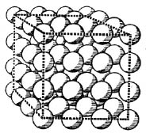

Bildiğimiz gibi, tüm madde yalnız birkaç çeşit temel tanecikten yapılmıştır. Elektronlar, maddenin ilk bulunan öğesel tanecikleri idi. Ama elektronlar eksi elektriğin de temel kuantumlarıdır. Bundan başka, bazı görüngülerin bizi ışığı da farklı dalga-boyları için farklı olan temel ışık kuantumlarından oluşmuş varsaymaya zorladığını öğrendik. Daha ileri gitmeden önce, ışımanın yanısıra maddenin de çok önemli bir rol oynadığı bazı fiziksel görüngüler üzerinde durmalıyız.
Güneş, bir prizma ile bileşenlerine ayrılabilen bir ışıma verir. Güneş’in kesiksiz tayfı böyle elde edilir. Görünür tayfın iki ucu arasında bütün dalga-boylarının yeri vardır. Başka bir örnek alalım. Akkor durumundaki natriyumun türdeş ışık, tek renkli ya da bir tek dalga-boyu olan ışık saçtığını daha önce söz konusu etmiştik. Akkor durumundaki natriyumu prizmanın önüne koyarsak, yalnız sarı bir çizgi görünür. Genellikle, prizmanın önüne ışıyan bir cisim konursa, cismin saçtığı ışık bileşenlerine ayrılır ve o cisme özgü bir tayf belirir.
İçinde gaz bulunan bir borudan geçen elektrik akımı, ışıklı reklamlarda kullanılan neon lambalarında görüldüğü gibi, bir ışık kaynağı yaratır. Böyle bir borunun bir spektroskobun (tayf göstericinin) önüne yerleştirildiğini düşününüz. Spektroskop, prizma gibi iş gören, ama prizmadan çok daha düzgün ve daha şaşmaz sonuçlar veren bir alettir. Spektroskop, ışığı bileşenlerine ayırır, yani, ışığı çözümler. Spektroskopla görülen Güneş ışığı, kesiksiz bir tayf verir. Bu tayfta bütün dalga-boylarının yeri vardır. Ancak, ışık kaynağı içinden elektrik akımı geçen bir gazsa, tayf başka karakterdedir. Kesiksiz, çok-renkli Güneş tayfı yerine, kesiksiz ve karanlık bir zeminde birbirinden ayrı şeritler belirir. Her şerit, çok darsa, belirli bir renge ya da, dalga teorisinin diliyle söylemek gerekirse, belirli bir dalga-boyuna karşılıktır. Örneğin, tayfta yirmi çizgi varsa, bunların her biri, uygun dalga-boyunu gösteren yirmi sayıdan biri ile belirtilir. Çeşitli element buharlarının farklı çizgi sistemleri vardır. Bundan dolayı, saçılan ışığın tayfını oluşturan dalga-boylarını gösteren sayı dizileri de farklıdır. Parmak izleri tıpatıp özdeş iki kişiye rastlanmadığı gibi, kendilerine özgü tayflarında özdeş şerit sistemleri olan iki element de yoktur. Fizikçiler bu sistemlerin kataloğunu çıkarırken, belirli yasaların varlığı da yavaş yavaş ortaya çıkmış, çeşitli dalga-boylarını gösteren ve görünüşte bağlantıları olmayan bazı sayı dizileri yerine basit bir matematiksel formül konabilmiştir.
Bütün bu söylenenler artık foton diline çevrilebilir. Şeritler, belirli bir dalga-boyuna ya da, başka bir söyleyişle, belirli bir enerji taşıyan fotonlara karşılıktır. Bundan dolayı, ışıklı gazlar, olanaklı bütün enerjilerde fotonlar salmazlar, yalnız kendi tözlerine özgü fotonlar salarlar. Gerçeklik, olanaklar âlemini bir daha sınırlandırmaktadır.
Belirli bir elementin, söz gelimi hidrojenin atomları, yalnız belirli enerjilerde fotonlar salabilir. Yalnız belirli enerji kuantumlarının salınmasına izin vardır, öbürlerinin salınması yasaklanmıştır. Kolay olsun diye, belirli bir elementin yalnız bir tek çizgi verdiğini, yani, kesinlikle belirli bir enerjisi olan fotonlar saldığını düşününüz. Atom, foton salınmasından önce enerji bakımından daha varsıl, sonra ise daha yoksuldur. Enerji ilkesine göre bundan çıkan sonuç şudur: Bir atomun enerji düzeyi, foton salınmasından önce daha yüksek, sonra ise daha alçaktır; bu iki düzey arasındaki farkın, salınan fotonların enerjisine eşit olması gerekir. Bundan dolayı, belirli bir element atomunun yalnız belirli bir dalga-boyu ile ışıması, yani, yalnız belirli bir enerji taşıyan fotonlar salması, şöyle de formülleştirilebilirdi: Bu elementin atomunda yalnız iki enerji düzeyi olabilir; bu fotonun salınması, atomun daha yüksek bir enerji düzeyinden daha alçak bir enerji düzeyine geçişi demektir.
Ama, elementlerin tayflarında, bir kural olarak, birden çok çizgi belirir. Salınan fotonlar bir değil, birçok enerji düzeyinde olur. Başka bir söyleyişle, bir atomda birçok enerji düzeyi olabileceğini ve foton salınmasının atomun daha yüksek bir enerji düzeyinden daha alçak bir enerji düzeyine geçişi ile uyuştuğunu varsaymalıyız. Ama bir elementin tayfında her dalga-boyu, her foton-enerji ortaya çıkmadığı için, atomun her enerji düzeyine geçememesi zorunludur. Her atomun tayfına özgü belirli bazı çizgiler, belirli bazı dalga-boyları diyeceğimiz yerde, her atomun belirli bazı enerji düzeyleri vardır, ve ışık kuantumlarının salınması atomun bir enerji düzeyinden öbürüne geçmesi ile birlikte olur diyebiliriz. Kural olarak, enerji düzeyleri sürekli değildir, tersine süreksizdir. Gerçekliğin olanaklarının sınırladığını burada da görüyoruz.
Bir elementin tayfında neden ona özgü çizgiler belirdiğini ve başka çizgilerin neden ortaya çıkmadığını ilk açıklayan Bohr’dur. Bohr’un yirmi yıl önce formülleştirdiği teori, öyle bir atom yapısı çizmiştir ki, bundan, basit durumların herhangi bir aşamasında, elementlerin tayfları hesaplanarak çıkarılabilir ve birbirleri ile bağlantıları olmayan sayılar, bu teorinin ışığında birdenbire anlamlı ve tutarlı duruma gelir.
Bohr’un teorisi, dalga ya da kuantum mekaniği denen daha derin ve daha genel bir teoriye doğru bir ara basamak olur. Bu son sayfalardaki amacımız, bu teorinin ana düşüncelerini belirtmektir. Bunu yapmadan önce, daha özel bir karakteri olan teorik ve deneysel bir sonucu burada anmalıyız.
Görünür tayf, belirli bir dalga-boyu olan mor renkle başlar ve belirli bir dalga-boyu olan kızıl renkle biter. Ya da, başka bir söyleyişle, görünür tayftaki fotonların enerjileri hep mor ve kızıl ışıkların foton-enerjilerinin çektiği sınırlar içinde kalır. Bu sınırlılık elbette yalnız insan gözünün bir özelliğidir. Bazı enerji düzeyleri arasındaki fark yeterince büyükse, o zaman, görünür tayfın ötesinde bir çizgi veren morötesi (ultraviolet) foton salınır. Morötesi fotonun varlığı çıplak gözle bilinemez; bu iş için bir fotoğraf camı kullanılmalıdır.
X ışınları da, görünür ışığınkilerden çok daha büyük enerji taşıyan fotonlardan oluşmuştur. Başka bir söyleyişle, X ışınlarının dalga-boyları, görünür ışığınkilerden binlerce kat daha küçüktür.
Peki ama, böylesine küçük dalga-boyları deneyle nasıl belirlenebilir? Bunu bayağı ışık için bile yapmak epey güç olmuştu. Küçük engeller ya da küçük delikler kullanmamız gerekmişti. Bayağı ışığın kırınımını göstermek için kullanılan o birbirine çok yakın iki iğne deliği, X ışınlarının kırınımını göstermek için, binlerce kat daha küçük ve birbirine binlerce kat daha yakın olmak gerekirdi.
Öyleyse bu ışınların dalga-boylarını nasıl ölçebiliriz? Burada doğa, kendisi yardımımıza koşuyor.
Bir kristal, hiç şaşmayan bir plana göre birbirinin çok yakınında duran atomların düzenli bir topluluğudur. Şekil, kristal yapısının basit bir örneğini gösteriyor. [Şekil-71]

[Şekil-71]
Burada, küçük delikler yerine, kesinlikle düzgün bir sıraya göre birbirinin çok yakınında duran atomların oluşturduğu son derece küçük engeller vardır. Atomlar arasındaki uzaklıklar, kristal yapısı teorisinden de anlaşıldığı gibi, öylesine küçüktür ki, X ışınlarının kırınımını göstermeleri beklenebilir. Deney, kristalde ortaya çıkan bu üç-boyutlu şaşmaz düzenlenişte pek sık olarak sıralanmış olan bu engellerin yardımı ile X ışınlarının gerçekten kırınabildiğini göstermiştir.
Bir X ışınının kristale çarptığını ve kristalden geçtikten sonra, bir fotoğraf camına rastladığını düşününüz. Fotoğraf camında kırınım modeli belirecektir. Kırınım modelinden dalga-boyu ile ilgili verileri çıkarmak amacı ile, X ışını tayflarını incelemek için çeşitli yöntemler kullanılmıştır. Bütün teorik ve deneysel ayrıntılar söz konusu edilseydi, burada kısaca söylenenler, ciltler doldururdu. III. tabloda, çeşitli yöntemlerden yalnız birinin kullanılması ile elde edilen bir kırınım modelini vermekle yetiniyoruz. Dalga teorisini destekleyen aydınlık ve karanlık halkaları burada da görüyoruz. Ortada kırınmamış ışın görünmektedir. X ışınları ile fotoğraf camı arasına kristal konmasaydı, yalnız ortadaki aydınlık benek görünürdü. X ışını tayflarının dalga-boyları bu çeşit fotoğraflardan yararlanılarak hesaplanabilir ve, öte yandan, dalga-boyu bilinirse, bundan kristalin yapısını belirten sonuçlar çıkarılabilir.